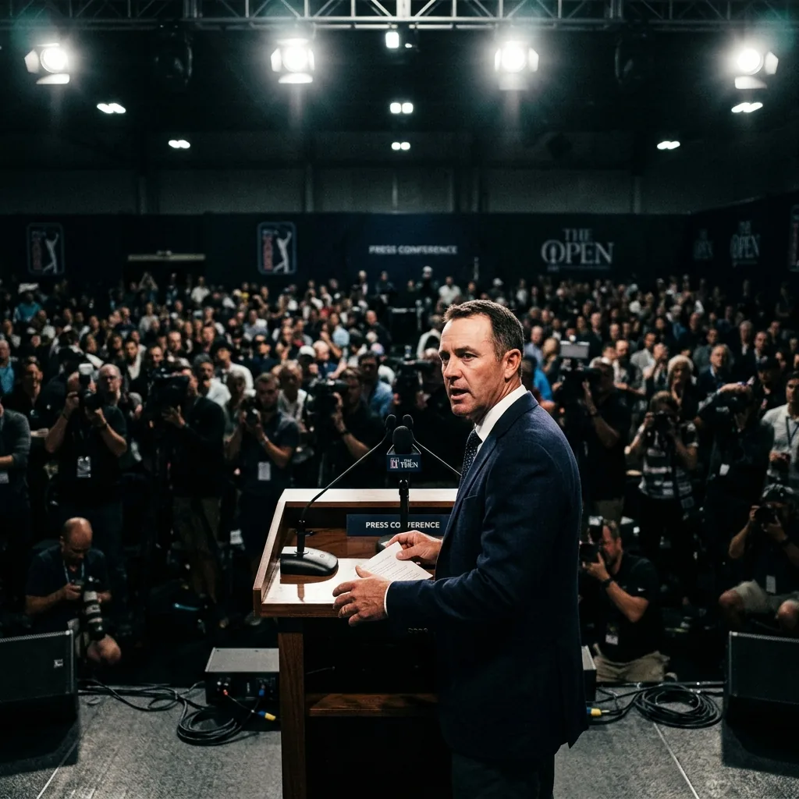

Quick answer: Tiger Woods returned to the public eye at the Travelers Championship, introducing PGA Tour CEO Brian Rolapp ahead of the announcement of the Tour's sweeping new 2028 structure. It was Woods's first public appearance since his March DUI arrest and a stint in rehab. He kept it brief, reading a short introduction and releasing a statement praising the work of the Future Competition Committee he chairs. He did not take questions.

It was a low-key return for golf's biggest name, in a role that was about the future of the Tour rather than his own game. Here is what happened and the context behind it.
What Did Tiger Woods Do at the Travelers Championship?
He played introducer, not headliner. Woods, who sits on the PGA Tour's policy board, stepped to the podium to introduce CEO Brian Rolapp before Rolapp announced the Tour's new two-series competitive model for 2028. Woods read a prepared introduction and then handed the stage to Rolapp for the details.
He did not hold his own press conference or field questions. His public comments amounted to the brief introduction plus a statement he posted on social media, in which he said he was honored to stand alongside Rolapp and called it a privilege to have led the committee behind the changes. Short, controlled, and focused entirely on the Tour news rather than himself.
Why Was This Appearance Significant?
Because of how long he had been out of sight, and why. This was Woods's first public appearance since the TGL match he played on March 24. Everything went quiet for him after that, following an arrest just days later.
For golf's most famous figure to vanish from public view for roughly three months is unusual on its own. So even a brief, scripted appearance at a podium became news. The story was less about what he said and more about the simple fact that he was back, standing in front of cameras again.
What Happened With Tiger Woods's DUI Arrest?
Here are the confirmed facts, and only the confirmed facts. Woods was arrested on March 27 near his home on Jupiter Island, Florida, after a two-car rollover crash involving his SUV. No injuries were reported in the accident.
According to the Martin County Sheriff's Department, Woods appeared lethargic, and he told deputies he had taken a few prescription medications. Two hydrocodone pills were found in his pocket. He blew zeroes on breathalyzer tests at the scene. He was charged with DUI with property damage and refusal to submit to a test, pleaded not guilty, and requested a jury trial. Those legal proceedings are still ongoing.
The arrest derailed what had been a planned competitive return. Woods had been targeting the Masters, but those comeback plans were shelved after the incident.
Has Tiger Woods Been in Rehab?
Yes. Woods completed a rehabilitation program in Switzerland a couple of weeks before this appearance. That stint was part of why he had been out of public view for so long.
It is worth being clear and fair here: beyond the confirmed facts of the arrest and his completion of a program, the private details of his recovery are his own. What is publicly known is simply that he stepped back from his Tour duties earlier in the year to focus on his recovery, completed a program abroad, and has now resumed at least some of his responsibilities.
What Is Tiger Woods's Role With the PGA Tour Now?
A significant one off the course. Woods chairs the nine-member Future Competition Committee, the group formed in 2025 that designed the Tour's new 2028 structure. The committee included players like Patrick Cantlay, Adam Scott, Maverick McNealy, Keith Mitchell, and Camilo Villegas, plus several business advisors.
Even while he stepped back during his recovery, Woods remained central to the project. Rolapp drove the work operationally, but Woods's name and credibility were a big part of what gave the overhaul its legitimacy with players and fans. He is also one of six player directors on the 12-member policy board, where players hold a voting majority, so his influence on the Tour's direction is real regardless of whether he is competing.
Is Tiger Woods Going to Play Golf Again?
There are signs he wants to, but nothing certain. Woods, who is 50, registered earlier this year for next month's U.S. Open, which suggests competitive golf is still on his mind. Whether he actually tees it up, given his recovery and ongoing legal situation, remains to be seen.
For now, his return was as an executive and a committee chairman, not a player. The appearance answered the question of whether he was ready to be seen in public again. It did not answer the bigger question of when, or if, he competes.
The Raw Read
This was a small moment carrying a lot of weight. Tiger Woods reading a 30-second introduction at a podium would normally be a footnote. After three months away following a DUI arrest and rehab, it became one of the day's biggest stories, even on a day the Tour announced the most significant changes to its structure in decades.
The honest read is to take it for exactly what it was. Woods showed up, did a job for the Tour he helped reshape, and kept the focus on the announcement rather than himself. The legal process will play out on its own timeline, and his playing future is still an open question. What this appearance confirmed is narrow but real: he is back in public, back in his Tour role, and not disappearing from the game he defined. Everything beyond that is still to be written.
Frequently Asked Questions
What did Tiger Woods do at the 2026 Travelers Championship?
He introduced PGA Tour CEO Brian Rolapp ahead of the announcement of the Tour's new 2028 competitive structure, then released a short statement. He did not take questions.
Was this Tiger Woods's first appearance since his DUI arrest?
Yes. It was his first public appearance since the TGL match he played on March 24, before his March 27 arrest and subsequent rehab.
What were the details of Tiger Woods's DUI arrest?
He was arrested March 27 after a two-car rollover crash near his Florida home. He was charged with DUI with property damage and refusal to submit to a test, pleaded not guilty, and requested a jury trial. No injuries were reported.
Has Tiger Woods completed rehab?
Yes. He completed a rehabilitation program in Switzerland a couple of weeks before this appearance.
What is Tiger Woods's role with the PGA Tour?
He chairs the Future Competition Committee that designed the Tour's 2028 changes and is one of six player directors on the 12-member policy board.
Will Tiger Woods play golf again?
It is unclear. He registered for the U.S. Open earlier this year, but his competitive return depends on his recovery and is not confirmed.